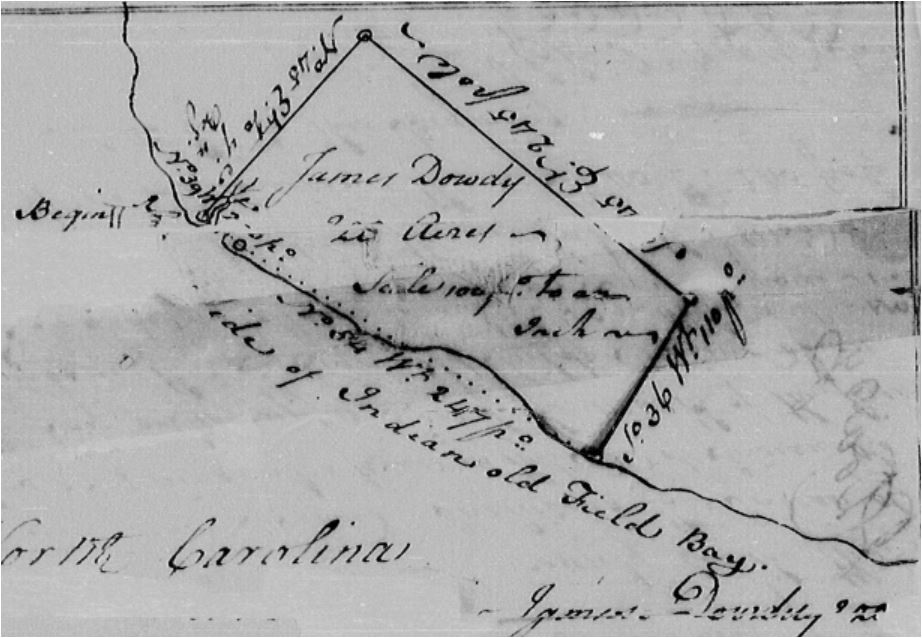

Carteret
County Carteret
CountyNorth Carolina |
|
 1765 NC Land Grants - James Dowdy - Acres: 200 Grant Number: 372 Issued: Oct. 30, 1765 Book, Page: 17:263 Location: On the Wt. side of Cedar Island including the Indian old fields; cc James Dowdy Jr, Beverly Reed
1769 Sep 29 - G/338 James Dowday to James Dowday Jr - Indenture dated 10 May 1769 between James Dowday of Beaufort Co of one part and James Dowday Junr of Beaufort Co of other part. L10 sod to James Dowday Junr, half of one messuage lying in County of Carteret containing 100 ac being on the West end of Cedar Island including the Indian Old Fields [description]. James Dowday Jr to have the Northernmost half <mark> James Dowday Wit. Meinecod Phillips, Adanijah Styron 1769 Oct 4 - G/340 James Dowday to John Dowday - Indenture dated 10 May 1769 between James Dowday of Beaufort Co of 1st part and John Dowdy of Beaufort Co of other part. L10 Sold to John Dowday half of one messuage lying in the County of Carteret 100ac on West side of Cedar Island including the Indian Old Fields [description] Jno Dowdy to have the Southernmost half, etc <mark> James Dowday Wit: Manuel Phillips, Adonijah Styring. Proven June Court 1769. Registered 4 Oct 1769 June 1769 Court. Deed of Sale from James Dowdy to John Dowday 100 acres. Oath Adonijah Styram. Wit: Manado Philip. Sept 1774 Court. Deed of Sale James Dowday to John Dowday 100 acres. Oath Christpher Lupton "he saw Mando Phillip and Richard Styrom witness deed." [this looks like a duplicate of the 1769 court record] June 1776 Court. Deed of Sale Andrew Bell to Wm Borden. Wit: Thomas Dowdy and Henry Dixon Aug 3 1778 Grant to Thomas Dowdy enters 50 acres Carteret County on North Bay of Cedar Island, border John Dowdy includes the North Point.
Jun 9 1781. Joseph Dowdy enters 150 acres in Carteret County on Piny Island and near mouth of Neus River. Border: near east side of Christpher Neal's land. Sept 19 1787 Land Grant to Wm Caruthers ":...border John Dowday, Jas Clark..." March 1791 Court John Dowday to Shadrack Emmery 100 acres . Oath Allen Robinson June 5 1793 Grant to Shadrack Emery. adj land "he bought of John Dowdy on Cedar Island patented by James Dowdy..." Jan 28 1794. Grant to Shadrack Emery. "...border James Dowdy" Carteret Probate - There are no Dowdy wills DEEDS Grantor (date of record) 1769 Sep 29 - G/338 James Dowday to James Dowday Jr - Indenture dated 10 May 1769 between James Dowday of Beaufort Co of one part and James Dowday Junr of Beaufort Co of other part. L10 sod to James Dowday Junr, half of one messuage lying in County of Carteret containing 100 ac being on the West end of Cedar Island including the Indian Old Fields [description]. James Dowday Jr to have the Northernmost half <mark> James Dowday Wit. Meinecod Phillips, Adanijah Styron 1769 Oct 4 - G/340 James Dowday to John Dowday - Indenture dated 10 May 1769 between James Dowday of Beaufort Co of 1st part and John Dowdy of Beaufort Co of other part. L10 Sold to John Dowday half of one messuage lying in the County of Carteret 100ac on West side of Cedar Island including the Indian Old Fields [description] Jno Dowdy to have the Southernmost half, etc <mark> James Dowday Wit: Manuel Phillips, Adonijah Styring. Proven June Court 1769. Registered 4 Oct 1769 1774 Sep H/73 James Dowday to John Dowday - (Note: this is selling the Northern half to John Dowdy previously sold to James Jr in 1769 above) Indenture dated 4 Sep 1774 between James Dowdy of Beauford Co of 1st part and John Dowdy of Beauford Co of other part. L10 sold half of messuage to John Dowday situated in County of Carteret 100 acres on the West side of Cedar Island incl the Indian Old Field [description]. John Dowday to get the Northernmost half etc <s> James Dowday Wit: Christopher Hupton, Mado Phillips, Richard Styring. Proven Sep Term 1774 1791 Mar L/333 John Dowdy to Shadrack Emery Grantees Same Dowday to Dowday 3 as above, no more.
|